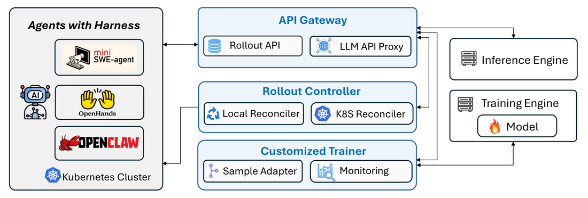
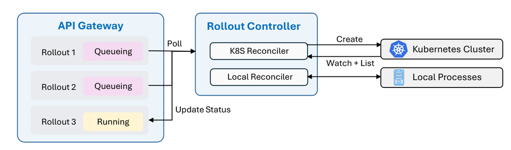

现代agent不是独立LLM。它们在 *agent harness* 里运行：harness管理工具、上下文和控制流，使其成为关键组件。我们最初的Agent Lightning工作引入一种分离架构，经LLM endpoint proxy把任意agent连到强化学习（RL）训练。最近的框架如verl Uni-Agent、AReaL 2.0、slime v0.3.0、Polar都跟进了这种proxy-based方法。
我们称这个范式为 *harnessed agentic RL*：部署时用的harness直接参与模型后训练，从而缩小训练与实际使用之间的差距。
我们系统性刻画harnessed agentic RL的挑战（retokenization、sample merging、advantage calculation、loss normalization、training backend scheduling），并提出Agent Lightning v1.0：约3,500行代码的轻量框架。
只用一个完整数据清洗流水线 + 6K训练样本 + 适度算力，RL把Qwen3.5-9B在SWE-bench Verified从41.8% 提到56.4%（绝对 +14.6%）。
现代agent不独立运行。它们在管理工具、执行环境、上下文和控制流的 *agent harness* 里跑。harness决定agent如何观察环境、长地平线行动、从失败恢复，是agent能力的核心部分。著名例子包括coding-agent harness（mini-SWE-agent、OpenHands、OpenCode、Claude Code、Codex）和通用harness（OpenClaw、Hermes）。

早期RL框架（verl、AReaL、slime）一般要求用户直接在训练框架内实现agent loop。集成现有harness因此困难，因为它们实现复杂、有自己的依赖。我们最初的Agent Lightning工作引入训练与agent执行的分离架构：经LLM endpoint把任意agent连到RL训练，几乎不改agent。最近proxy-based方法在verl Uni-Agent、AReaL 2.0、slime v0.3.0、Polar中变得更常见，天然启用带harness的RL训练。
我们用 *harnessed agentic RL* 指经部署时用的同一agent harness进行的RL训练。harness而非trainer拥有上下文构造、工具执行、agent-环境交互循环；训练系统跨服务边界观察并优化产生的模型调用。这个公式保留harness的部署时上下文策略、工具协议、执行语义，无需在RL框架内重实现agent loop。
传统agentic RL和harnessed agentic RL都可用部分可观测MDP建模，但潜在状态和给policy模型的观测不同。传统里潜在状态主要是环境状态，policy模型几乎直接经透明层与环境交互；policy观察到持续扩展的token历史，一个rollout自然形成一条线性token轨迹。
Harnessed里policy不再直接交互环境。潜在状态含harness状态和环境状态；harness拥有上下文构造、控制流、工具执行、agent编排，为每个模型调用独立构造请求prompt。Policy只观察经LLM API送达的精确prompt。一个rollout在模型边界暴露为request-response对序列 (p1,a1),(p2,a2),...，中间的harness和环境状态转换保持潜在。
关键区别表：传统：State=Environment、Model input=连续token历史、Agents=单ReAct agent；Harnessed：State=Harness+environment、Model input=per-call prompts、Agents=多agent/subagent/handoffs。
这引出下面实现挑战：retokenization与sample merging（重token化后token ID可能不同，打断连续性无法安全合并）；advantage calculation（一个rollout可能产生动态数量训练样本）；loss normalization（样本数动态，sample级归一化会给多样本rollout过多权重）；training backend scheduling（样本数执行后才知，要在固定GPU worker上平衡）。
我们提供这些挑战的首次系统刻画，并提出Agent Lightning v1.0：原Agent Lightning的完整重构，一个约3,500行代码的轻量harnessed agentic RL框架。训练流水线内嵌我们对上述挑战的设计选择，提供研究它们的实用testbed。
Harness通常经文本消息与模型API通信。从harness视角，rollout由turn-level调用组成（(p1text,a1text),(p2text,a2text),...）。典型ReAct风格多turn agent中，前一次调用形成下一次prompt的完整文本级前缀。但当harness spawn subagent或总结上下文时，训练引擎可能收到不满足该关系的后续调用。
RL训练操作精确token ID和rollout log概率。RL系统用token序列pitok和aitok表示每个调用，aitok∼πθ(·|pitok)。响应解码回文本给harness。token-prefix连续性要求 (pitok,aitok) 是pi+1tok的精确token级前缀。
实践中文本级前缀成立不保证token级成立。下一请求通过对更新消息历史应用chat template和tokenizer获得。重token化后，pi+1tok里对应aitext的token ID可能不同于aitok里原始采样的ID。
这个不匹配至少经三种机制出现：
Chat-template非组合性：渲染完整消息历史不一定等于拼接各部分的渲染：模板可能在消息边界插入分隔符/连接换行，或省略原始生成里出现的marker。例如Qwen的chat template会移除早期thinking marker，破坏token-prefix连续性。
Decode-retokenize drift：token解码非单射，把采样token转文本再tokenize不必恢复原token ID。具体例：having被采样为h和aving两个token，但同一文本在后续prompt里重token化可能产生hav和ing：解码文本不变，token边界不同，破坏两调用间连续性。
Inference-time output transformation：tool-call和结构化输出handler可能在返回harness前解析、归一化、修复、重序列化采样响应，改变空白、分隔符、JSON结构或无效语法，使后续prompt里的响应即使文本级也不同于采样token ID代表的响应。
缓解策略。最直接：独立训练每个模型调用（保证token级正确，但长prompt前缀反复计算低效）。AReaL和verl Uni-Agent在LLM proxy维护request buffer存每调用历史文本和token；新请求文本精确匹配缓冲历史时，把对应前响应文本的token段替换为缓冲的响应token，保证token-prefix条件恒成立。slime和Polar不做替换。
替换有更深问题：当缓冲token ID与实际下一请求不同，它改变下一响应被评估的prompt：产生off-policy差异（stitched prompt ≠ 实际消费的prompt）。第二种方法是prefix-shared/tree-structured训练（精确公共前缀表示一次，branch-aware causal attention mask保证token只attend祖先和同分支早token），但需大量后端支持。
第三种实用方法：best-effort sequence merging。只有观察到token ID满足精确token-prefix时才合并两调用；条件成立只append未匹配后缀和下一action；失败则关闭当前序列开新序列。这保留rollout消费的prompt，配标准稠密causal kernel工作，重token化drift只降低合并率。Agent Lightning v1.0采用它作独立调用重算与后端密集tree训练之间的中间地带。
Advantage Calculation。LLM调用合并后，一个rollout ρ 可产生不同数量的训练样本Nρ，只在执行和样本构造后已知。Retokenization是一个来源；harness也可spawn subagents创建不共享单一线性历史的分支，或总结上下文替换前token前缀。这些操作可把一个task-level rollout拆成多个训练样本。这不是边角情况：我们的coding-agent训练中平均只有36% 的rollout保持为单一训练样本，每个rollout平均产出2.4个训练样本。
实践中reward仍是outcome-based，分配给产出它的rollout内每个样本。自然问题：算advantage时group统计应在rollout级还是sample级？现有框架选择不同：verl Uni-Agent和Polar在rollout级算，slime和AReaL在sample级。
具体例：Rollout 1和Rollout 2从同一prompt的同一GRPO group生成，Rollout 1得reward 1、Rollout 2得0。传统RL每rollout映射恰好一个训练样本，baseline r̄=(1+0)/2=1/2无争议。Harnessed里Rollout 1有三个样本而Rollout 2一个：rollout级仍是1/2，sample级变成 (1+1+1+0)/4=3/4。
我们相信rollout级advantage更principled：retokenization是偶然现象，advantage不应因retokenization恰好把rollout拆更多样本而变；subagent spawn和context summarization是harness内部操作，不应允许改变整组baseline。
Loss Normalization。动态样本数也让loss归一化非平凡。考虑R个rollouts的训练batch，rollout ρ 产Nρ 样本。三种常见归一化：
Token-mean（DAPO）：对batch内每token求和loss，除以总响应token数。Seq-mean-token-mean（GRPO）：先样本内平均再对batch内所有样本均匀平均。Rollout-level token-mean（slime）：先把rollout所有响应token汇在一起，再对rollouts均匀平均。
我们与advantage同样立场：样本数不应影响梯度归一化，因为它常由retokenization等偶然因素驱动。Seq-mean-token-mean有问题：它随单rollout恰好产多少样本变，一般给多样本rollout不成比例更多权重。实践中token-mean对长序列敏感：batch出现很多长负样本时后期训练可能不稳定。因此偏好rollout级token-mean。
动态样本数也让与训练后端交互复杂化。rollout batch的样本数和长度只在harness执行和样本构造后已知；训练GPU数和data/tensor/pipeline-parallel配置通常全程固定。后端必须在每次迭代把可变工作负载映射到固定worker集。
样本构造后后端可把结果序列展平成物理tensor batch，但必须保留统计来源：每序列应保留rollout id和prompt-group id。展平只改变物理表示，不得改变rollout成员关系，也不得让rollout因产出更多序列而获额外统计权重。
Rollout边界也约束batch调度。Row-based tensor batch、data-parallel分区、micro-batch调度不能单从prompt或rollout数规划，因为Nρ 执行后才知道。且一个rollout的序列应保持在同一optimizer update：拆分会让一个rollout的不同部分在不同policy版本下评估，引入within-rollout policy skew。后端必须在保留rollout级统计和更新边界的同时跨固定worker平衡token工作负载。
trainer与agent harness分离时，没有单进程拥有完整rollout生命周期。trainer拥有模型推理和优化，harness拥有上下文构造、控制流、工具使用、环境交互。Agent执行可远程运行、持久超越任何单API请求或worker进程、独立于训练进程失败。

Agent Lightning v1.0围绕声明式rollout抽象和reconciliation loop构建控制平面。Trainer经API Gateway声明rollouts：它是生命周期状态和append-only events的source of truth。Rollout Controller持续用跑作Kubernetes Jobs或本地进程的agent执行reconcile该状态。这个分离让Kubernetes成为可互换执行后端而非rollout抽象的一部分。
同一控制平面提供跨服务边界的显式可靠性和可观测性语义。控制平面操作幂等、generation attempts显式记录和解析、rollout id把model requests、rewards、custom events、execution logs链成一个诊断记录。API Gateway还在collocated async RL期间协调inference admission，让rollout和weight update时间共享一个GPU pool，不向外部harness暴露阶段切换。
三组件：API Gateway：存储rollouts、models、events的API服务，把harness的LLM调用转发到trainer注册的模型endpoint。Rollout Controller：在Kubernetes cluster（或本地进程池）上管理agent执行，轮询API Gateway的rollouts并启动对应agent任务。Customized Trainer：VERL基础上，向API Gateway注册rollouts、等Rollout Controller驱动完成、取回记录事件组装训练样本。
全系统约3,500行代码，每组件责任清晰。内嵌我们对挑战的设计选择：rollout级reward/advantage计算和rollout级loss归一化。
| Method | Endpoint | Comment |
|---|---|---|
| POST | /api/rollouts | Create a batch of rollouts. |
| GET | /api/rollouts | List rollouts, optionally filtered by state. |
| GET | /api/rollouts/{rollout_id} | Get one rollout. |
| PATCH | /api/rollouts/{rollout_id} | Update rollout status. |
| POST | /api/rollouts/{rollout_id}/attempt/{attempt_id}/events | Append an event to a rollout attempt. |
| GET | /api/rollouts/{rollout_id}/events | Read rollout events. |
| POST | /api/models | Register model endpoints. |
| DELETE | /api/models | Remove all registered model endpoints. |
| POST | /proxy/rollout/{rollout_id}/attempt/{attempt_id}/mode/{mode}/openai/v1/chat/completions | Forward an OpenAI-compatible model call. |
Collocated Async RL。Agentic RL里同步设置慢：batch里所有rollout必须完成训练步才能更新模型，所以训练步等最慢rollout，大量GPU闲置。AReaL提出的异步RL把rollout和update拆到两池机器解决GPU闲置，但要更多GPU总量，且要分别管理rollout队列和update队列，两队列实际推进速度不同更复杂。
我们提出 *collocated async*：rollout和weight update共享同一GPU pool。收集足够rollout数据后update步开始。API Gateway同时停止接受新请求等当前完成；之后新请求被暂停直到系统重入rollout阶段。切换对agent harness不可见。
Collocated async让同GPUs在rollout和训练间时间共享，比异步RL用更少GPU，同时避免等最慢rollout。实验里比同步RL约2× 端到端加速且用更少GPU。
网络问题。Harnessed agentic RL里agent与训练引擎分离导致网络问题：两侧调用跨网络、不总可靠。两类受影响调用：Trainer/Rollout Controller到API Gateway的调用；agent harness经proxy到LLM inference endpoint的调用。我们用两措施：幂等API Gateway endpoints（每个rollout endpoint幂等，重复调用效果同一次，调用方可自由重试）；重复LLM API调用去重（重试的LLM调用无法同样幂等，Customized Trainer组装样本时去重共享同prompt的model_request events：同prompt多次调用只留最后一次）。
Kubernetes集成。现有框架常转向商业sandbox服务（verl Uni-Agent用Modal Sandbox/Volcano veFaas、slime用E2B）。Agent Lightning v1.0经Rollout Controller直接在Kubernetes cluster跑agent，每agent执行为标准K8s Job，完全自托管/本地算力，避免商业sandbox的经常性成本，保持训练栈开源。
监控。训练中agent本身会遇问题（reward hacking、坏agent行为、网络连通）。Customized Trainer含监控系统记录训练和验证rollouts加Kubernetes pod级日志，可用AI agents自动识别问题：我们确实用这方式发现几个reward-hacking例子。
我们评估三个设置：search、general instruction following、coding。Search遵循Search-R1设置训练搜索agent，interleave推理与搜索引擎查询，用检索段落回答知识密集问题。Policy用Llama-3.2-3B-Instruct、GRPO优化。HotpotQA训练split训练。评估从HotpotQA、2WikiMultiHopQA、MuSiQue、Bamboogle、TriviaQA、Natural Questions各采50例。训练batch 512、每prompt 4 rollouts、每10步评估。EM作reward指标。
训练动态：平均训练reward稳步升。验证集reward从25.1% 到41.7%，绝对 +16.6%。
遵循LLM-in-Sandbox设置训练通用指令跟随agent。agent用computer sandbox访问外部资源、管理文件、执行代码解决多样非编码任务。用原作者提供的agent harness。Policy用Qwen3-4B-Instruct-2507、RLOO优化。Instruction Pre-Training数据集80% 训练20% 评估。训练batch 8、每prompt 8 rollouts、每20步评估。
batch级训练reward噪声大，验证reward清晰上升：从51.9% 到70.2%，绝对 +18.3%。
用Qwen3.5-9B基于SWE-smith数据集任务训练coding agent，mini-SWE-agent作harness交互仓库环境、执行命令、产生代码改动。
数据集预处理与过滤。SWE-smith是把bug引入真实Python仓库构造的可执行软件工程任务大规模数据集：128个仓库59,136任务，含问题陈述、代码patch、验证测试。Docker镜像只占295 GB，远小于R2E-Gym的4 TB和SWE-Gym的6 TB。
我们在发布数据中发现问题：59,136记录里18,033有空问题陈述；1,265记录对应问题分支在Docker镜像缺失；一些任务测试套件巨大（python-jsonschema要执行7,000+ 测试）。
我们移除空问题陈述、缺问题分支、或超200测试的任务。剩余任务难度分布高度偏斜、训练信号有限，加model-based难度过滤：Qwen3.5-9B对每候选跑四次：四次全解的任务移除、有成功有失败的保留（约5,000例）；另外采1,000个四次全失败的任务防结果集过易。最终split约6,000训练 + 400测试。
防Reward Hacking。训练中观察到agent绕过预期解题过程直接拿参考源码：用Git历史定位gold commit；用wget/curl从GitHub取上游源码；用pip下载包源码；用urllib等Python网络库下载源码。两措施：禁用Git命令并隐藏 .git目录；强制Kubernetes网络策略阻断一般出站网络、只许白名单服务。要求agent只用给定问题陈述和本地信息解任务。
训练动态。因rollout样本数常由retokenization等偶然因素驱动，advantage和loss归一化都应在rollout级。用coding训练验证三设置（同GRPO目标）：Sample-level Advantage（sample级advantage + token-mean loss）；Rollout-level Advantage（只换advantage到rollout级）；Rollout-level Advantage + Rollout-level Norm（另加rollout级token-mean loss）。
最后变体最高验证reward：step 128达38.2%，对比baseline 35.0% 和只修advantage的33.1%。其policy entropy增长更慢、更稳定。在SWE-bench Verified上该checkpoint从41.8% 提到56.4%（step 208）。因轨迹长度差异大，rollout级advantage变体尽可能合并轨迹减padding浪费，产生动态样本数：平均仅36% rollout保持单完全合并行，每rollout平均2.41训练样本。
我们刻画 *harnessed agentic RL*：部署时agent harness而非训练引擎拥有环境交互循环的范式：并识别retokenization、advantage calculation、loss normalization、training backend scheduling带来的挑战。提出Agent Lightning v1.0，约3,500行支持任意agent harness并内嵌rollout级设计选择的框架。
在search、instruction-following、coding agents上验证，发布完整数据流水线和reward-hacking防护，让RL单独把Qwen3.5-9B在SWE-bench Verified从41.8% 提到56.4%（+14.6个百分点），只用约6K训练样本。发布完整代码库和脚本促进可复现harnessed agentic RL研究。
参考：https://arxiv.org/html/2608.17528v1